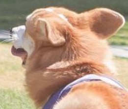

<!DOCTYPE html>
<html lang="en">
<head>
    <meta charset="UTF-8">
    <title>bootstrap_imgShape</title>
    <meta name="viewport" content="width=device-width, initial-scale=1, shrink-to-fit=no">
    <!--width=device-width 表示宽度是设备屏幕的宽度。
    initial-scale=1 表示初始的缩放比例。
    shrink-to-fit=no 自动适应手机屏幕的宽度。-->
    <link rel="stylesheet" href="resource/css/bootstrap.css">
    <script src="resource/js/jquery-3.3.1.js"></script>
    <script src="resource/js/popper.min.js"></script>
    <script src="resource/js/bootstrap.js"></script>
</head>
<body>
    <div class="container">
        <!---->
        <!--加圆角-->
        <!---->
        <!--缩额图带边框-->
        <!---->
        
        <!---->
    </div>
</body>
</html>